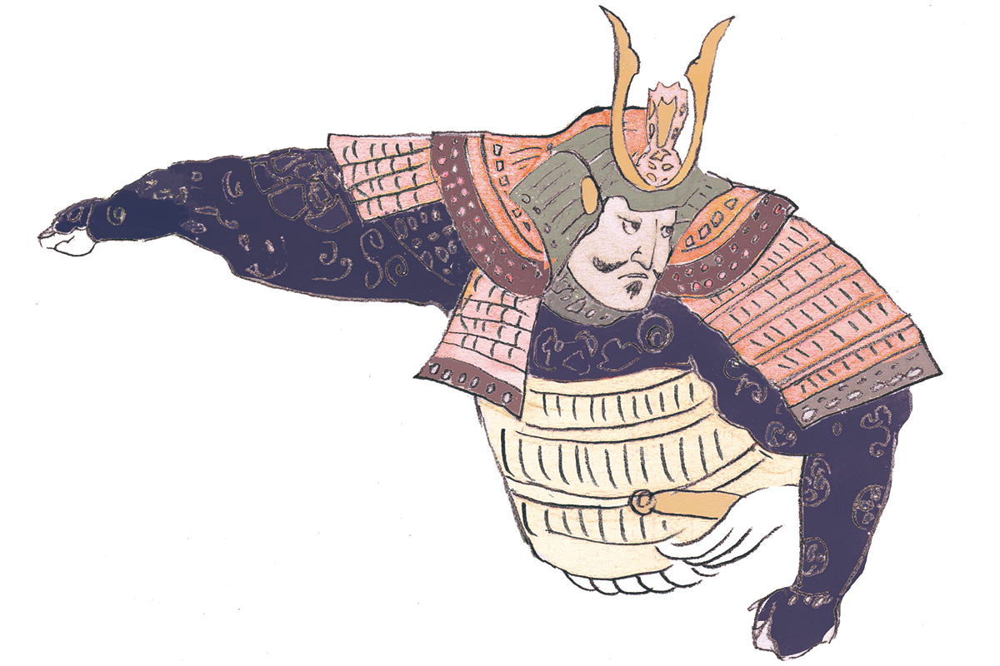
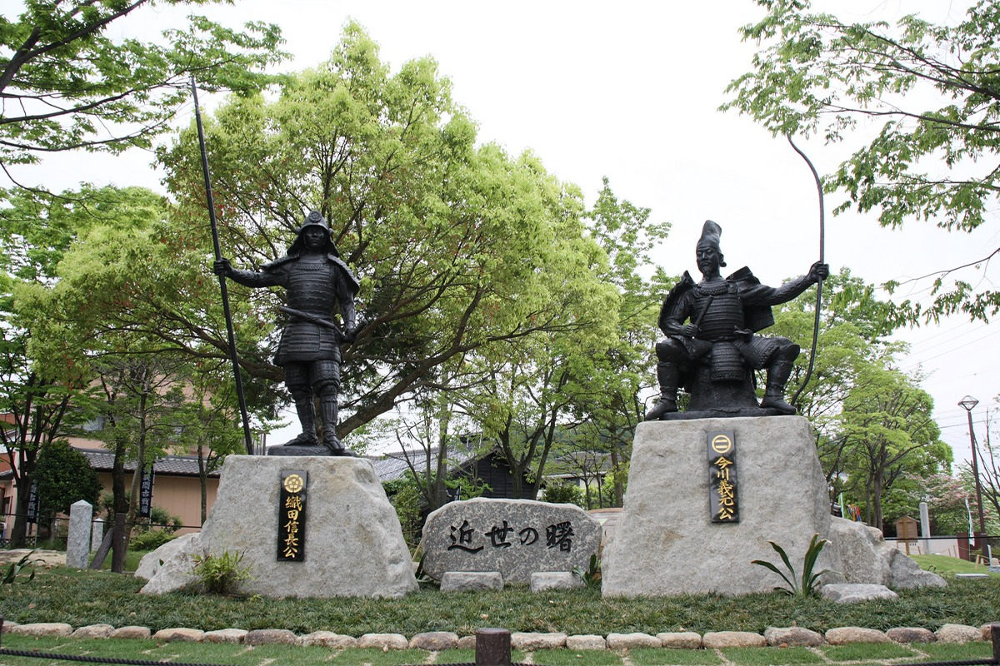

Префектура Сидзуока · провинция Суруга · история
Ёсимото Имагава: образованный правитель Суруги, проигравший одну битву

С конца XV до конца XVI века Япония жила в непрерывных войнах, и от той эпохи остались полководцы, о которых рассказывают до сих пор. Ёсимото Имагава правил землями нынешней префектуры Сидзуока и вошёл в историю как человек, проигравший самую знаменитую битву своего века.
Эпоха
Время сражающихся провинций
В конце XV века власть сёгуната Муромати окончательно рухнула, и место прежних наместников по всей стране заняли местные военные правители, даймё. Почти сто лет они воевали друг с другом за земли и влияние. Этот век японцы называют эпохой Сэнгоку, «эпохой воюющих провинций», и именно он дал больше всего полководцев, ставших героями легенд.
Ёсимото Имагава прожил с 1519 по 1560 год. Он происходил из рода Имагава, одного из самых знатных в стране, и родился в провинции Суруга, на землях нынешней префектуры Сидзуока. В детстве его звали Хогикумару, в монашестве Байгаку Сёхо, и лишь потом он получил имя Ёсимото. Главной женой его стала дочь правителя соседней провинции Каи Нобуторы Такэды (1494–1574), старшая сестра знаменитого полководца Сингэна Такэды.
Судьба
Слава, которую перечеркнула одна битва
Имагава правили провинциями Суруга и Тотоми, то есть почти всей нынешней Сидзуокой. В 1560 году Ёсимото повёл войско в 25 000 человек на запад, в провинцию Овари. Против него вышел Нобунага Ода (1534–1582), молодой правитель Овари, который позже начнёт объединение Японии. Войско Нобунаги, по преданию, было вдесятеро меньше, но Ёсимото проиграл и погиб в 42 года.
Битву при Окэхадзаме считают поворотным моментом: после неё Нобунага стремительно набирал силу. Дом Имагава, напротив, так же стремительно пришёл в упадок, и слава Ёсимото пострадала вместе с ним. О нём рассказывали, что он был так тучен, что не мог сесть на коня, а увлечение придворной жизнью Киото дошло до того, что он чернил зубы и пудрил лицо, как аристократ.
На деле Ёсимото, по мнению историков, был высокообразованным и умелым правителем, который всерьёз занимался управлением своими землями. Проиграй он не Нобунаге, а кому-то другому, потомки, возможно, судили бы о нём иначе.
Слова, обращённые к сыну
Сын Ёсимото, Удзидзанэ Имагава (1538–1615), вёл беспутную жизнь, и отец одёрнул его такими словами:
«Не оставайся ребёнком навсегда»
Ёсимото Имагава
Ёсимото привыкли считать любителем придворных забав, но эти слова говорят о другом: и в делах, и дома он, вероятно, был человеком строгим.
Хроника
Жизнь Ёсимото в датах
1519. Ёсимото рождается в провинции Суруга.
1522. Мальчика отдают в храм Дзэнтоку-дзи школы риндзай, и он становится монахом.
1536. Внезапно умирает его старший брат, наследник рода. Вокруг выбора нового главы начинается борьба, смута Ханагура. Ёсимото возвращается в мир и становится главой дома Имагава.
1537. Он женится на дочери Нобуторы Такэды, с которым прежде враждовал, и заключает союз провинций Каи и Суруга.
Около 1540. Нобухидэ Ода (1511–1552), отец Нобунаги, вторгается в провинцию Микава. В 1542 году войска Имагава вместе с местными воинами Микавы дают ему большое сражение и, как считается, терпят тяжёлое поражение.
1549. Микава переходит под власть Ёсимото.
1554. Ёсимото женит сына Удзидзанэ на дочери Удзиясу Ходзё (1515–1571), правителя соседних земель на востоке, и складывается тройной союз родов Такэда, Ходзё и Имагава.
1555. Во втором сражении при Каванакадзиме Ёсимото выступает посредником между Сингэном Такэдой (1521–1573) и его главным соперником Кэнсином Уэсуги (1530–1578) и мирит их.
1560. Ёсимото погибает в битве при Окэхадзаме.
Где увидеть
Следы Имагава в Сидзуоке и поле Окэхадзамы
Храм Риндзай-дзи, родовой храм Имагава
Храм школы риндзай на северной окраине города Сидзуока служит поминальным храмом старшего брата Ёсимото, главы рода до 1536 года. Здесь кладбище рода Имагава, охраняемое городом как исторический памятник, и деревянные статуи Ёсимото и его наставника, монаха и советника Сэссая Тайгэна (1496–1555).
Риндзай-дзи остаётся действующим монастырём, где учатся монахи, поэтому в обычные дни на территорию не пускают. Двери открывают один-два раза в год. В 2023 году храм принимал гостей 19 мая, в день гибели Ёсимото, и 15 октября; 15 октября 2026 года показывали статуи Ёсимото и его брата, вход был бесплатным.
Храм Риндзай-дзи
- Адрес
- префектура Сидзуока, город Сидзуока, район Аой, Оива-тё, 7-1
- Телефон
- +81 54-245-2740
- Даты
- только в дни открытия, один-два раза в год (15 октября 2026 года: 10:00–15:00)
- Как добраться
- от северного выхода станции Сидзуока автобусом до остановки «Риндзайдзи-маэ», затем 5 минут пешком
Парк замка Сумпу, где стояла резиденция Имагава
Резиденция рода Имагава, по мнению историков, стояла в районе замка Сумпу в центре города Сидзуока. Позже на этом же месте построил свой замок Иэясу Токугава (1543–1616), основатель сёгуната Эдо, который мальчиком жил заложником у Имагава. Территория замка стала городским парком. В восстановленных воротах Хигаси-гомон и угловой башне Тацуми-ягура с 2021 года работает выставка об истории замка, и начинается она с резиденции Имагава.
Парк замка Сумпу
- Адрес
- префектура Сидзуока, город Сидзуока, район Аой, Сумпудзё-коэн, 1-1
- Часы работы
- парк открыт всегда; ворота Хигаси-гомон и башня Тацуми-ягура 9:00–16:30 (вход до 16:00)
- Выходные
- понедельник (если праздник, открыто), с 29 декабря по 3 января
- Цены / Вход
- в парк бесплатно, ворота и башня 200 иен
Поле битвы при Окэхадзаме
Место последней битвы Ёсимото находится за пределами Сидзуоки, в городе Нагоя соседней префектуры Айти. Там разбит парк «Окэхадзама кособадзё», где стоят памятники Ёсимото Имагаве и Нобунаге Оде. Вокруг парка можно свободно погулять по историческим местам, связанным с битвой.

У самого парка парковки нет, машину оставляют у туристического информационного центра Окэхадзамы.
Парк «Окэхадзама кособадзё»
- Адрес
- префектура Айти, Нагоя, район Мидори, Окэхадзама-кита, 3
- Как добраться
- парковка у туристического информационного центра Окэхадзамы (Нагоя, район Мидори, Окэхадзама Макияма, 2037)
- Сайт
- okehazama.net